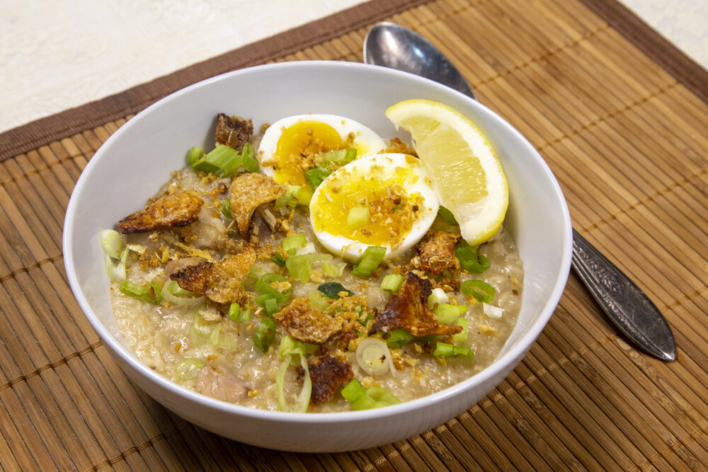

French toast is a dish made of sliced bread soaked in beaten eggs and typically milk, then pan fried. Alternative names and variants include "Eggy bread", "Bombay toast", "Gypsy toast", and "Poor knights".
Hotcake
Hotcakes are one of our favorite breakfast food. It comes in a variety of flavors and syrups like chocolate and blueberry pancakes.
Cheesy Egg Omelette
Omelettes can be plain, filled with veggies, herbs, cheese, For this particular recipe, we’re doing cheese omelette, which is my favorite. Simple, classic, delicious.
Masala Chicken on Toast
Masala Chicken on Toast recipe is a marinated juicy chicken pieces stirred in with a host of flavours, served on hot buttered toast.
Breakfast Burrito
Bodega-style breakfast burritos filled with spicy sausage, smoky scrambled eggs, cheese, and a bright, fresh avocado-tomato salsa.
Egg Mayo Sandwich
Egg mayo sandwich recipe is proof of how good a classic sandwich and boiled egg can be. It is loaded with flavour, soft, creamy and downright tasty.
Hash Brown
Hash browns are one the most widely served foods in the world. They are pieces of potatoes that have been cut, shaped and fried to give them a fresh, crunchy texture.

Arroz Caldo
Arroz Caldo or aroskaldo is a Filipino lugaw is a porridge made of chicken and rice and flavored with fresh ginger, garlic, onions, and fish sauce.
Fried Rice
Fried rice is a quick and delicious way to transform leftovers into something greater than the sum of its parts. Though we sometimes think of certain ingredients being typical (eggs, garlic) the only things you need to make fried rice are heat, rice, and oil.